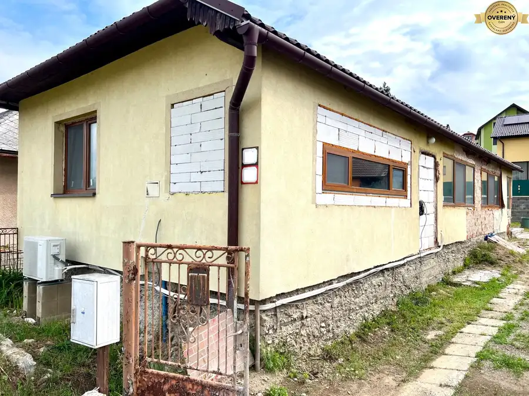
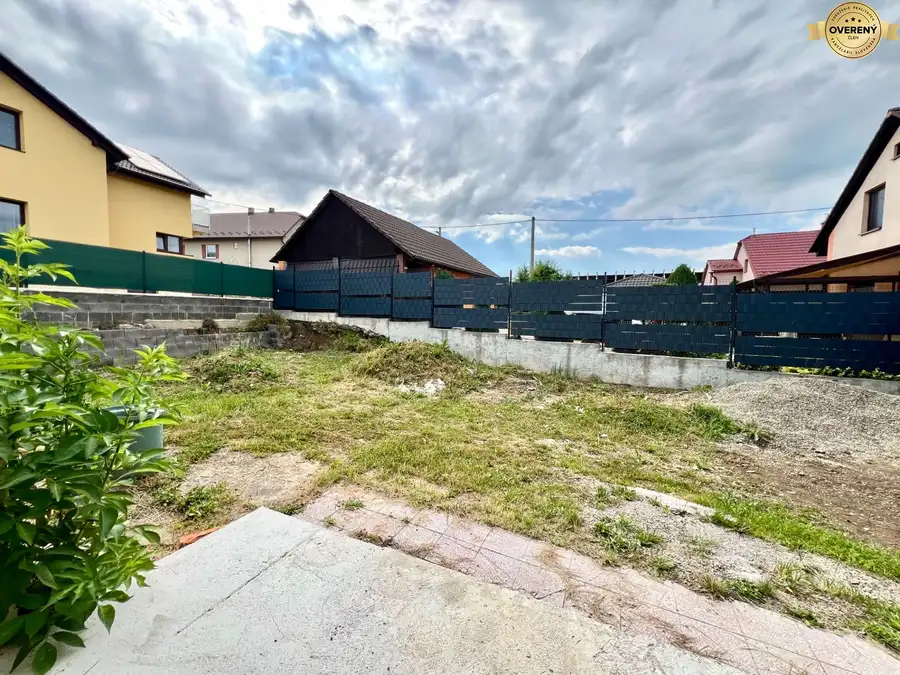
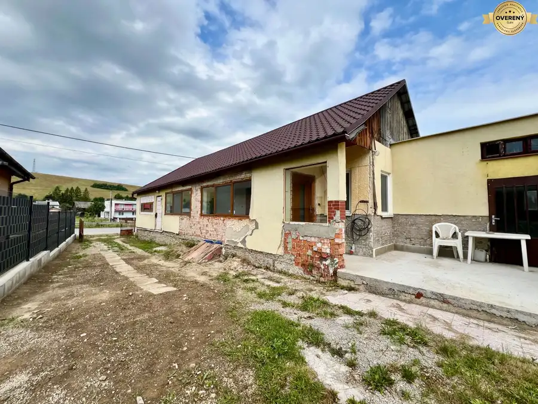
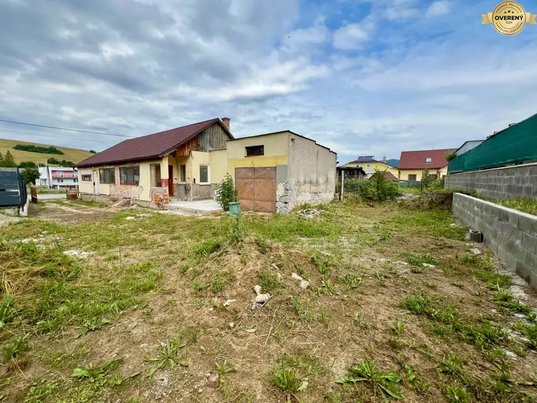
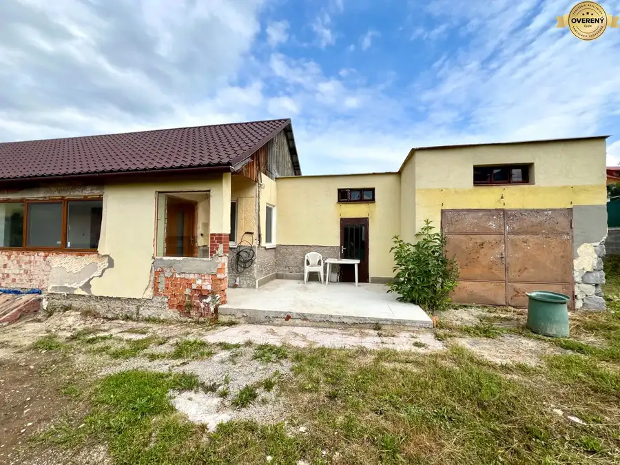
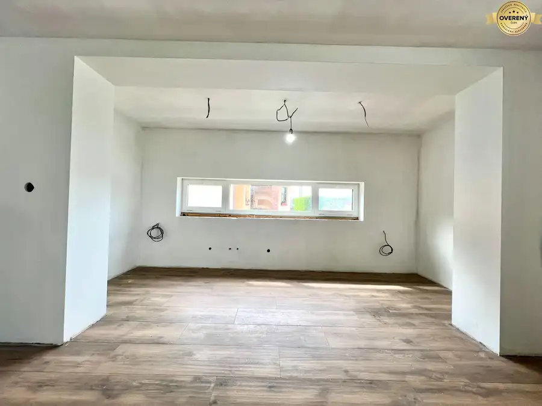
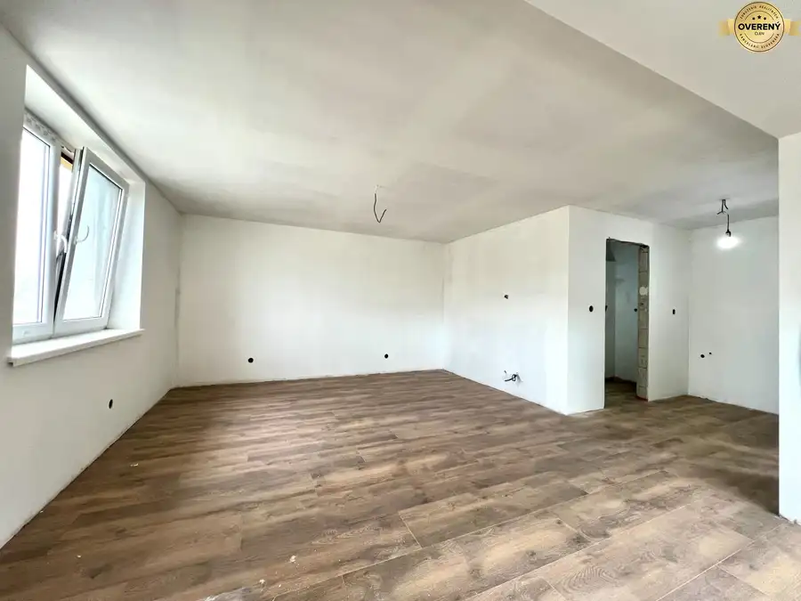
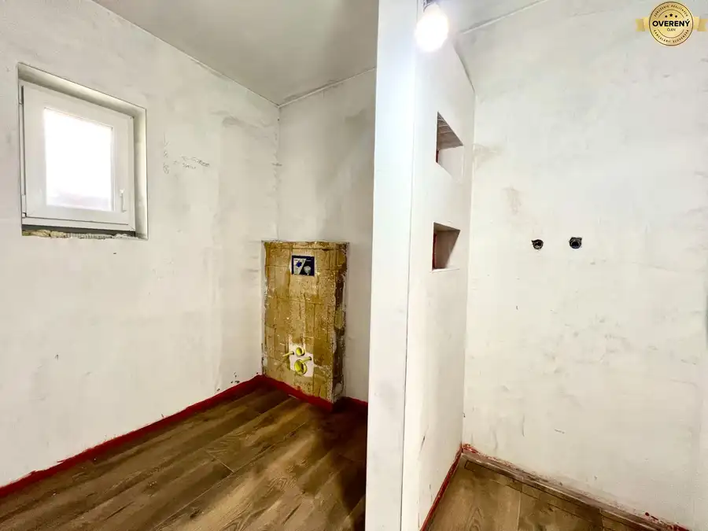
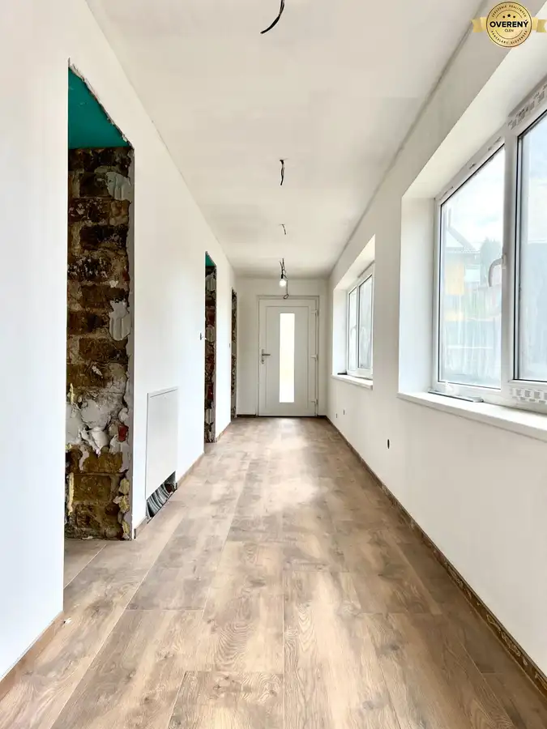

Na predaj rodinný dom v obci Ľubotín, okres Stará Ľubovňa
Ľubotín










- Dispozícia4-izbový
- Poschodie0.
- Stavčiastočne prerobený
- Vlastníctvoosobné
O nehnuteľnosti
Technické informácie a špecifikácia:
➡️ 3x izba + kuchyňa s obývacou izbou + 2x WC s kúpeľňou,
➡️ čiastočne začatá rekonštrukcia domu,
➡️ IS: vodovod obecný - zatiaľ nepripojené, možnosť napojiť sa,
➡️ IS: plyn - zatiaľ nepripojené, možnosť napojiť sa,
➡️ IS: kanalizácia - zatiaľ nepripojené, možnosť napojiť sa,
➡️ IS: elektrina – pripojené,
➡️ kúrenie riešené tepelným čerpadlom s akumulačnou nádobou,
➡️ stavebný materiál domu je kombinácia pálenej a nepálenej tehly,
➡️ dlažba na chodbe a v kuchyni s obývacou izbou,
➡️ komfortné podlahové kúrenie,
➡️ stropy sadrokartónové,
➡️ strecha plechová,
➡️ v dome nové rozvody vody, odpadu a elektriny,
➡️ okná plastové,
➡️ dom je ihneď voľný,
➡️ čiastočne podpivničený dom,
➡️ pozemok o výmere 467m2,
➡️ garáž,
CENA za dom s pozemkom je 119.000,-Eur.
Výhody:
Ideálna dispozícia oddelených a nepriechodných izieb, vlastné kúrenie riešené tepelným čerpadlom, poctivá rekonštrukcia za použitia kvalitných materiálov, všetky IS sú pred domom s predprípavou na pripojenie vody a kanalizácie vrátane projektovej dokumentácie. Možnosť dokončenia domu podľa vlastných predstáv, šikovná výmera pozemku 467m2, garáž.
Fotografie boli graficky upravené pomocou moderných digitálnych nástrojov.
✔️V cene je samozrejme kompletný právny a realitný servis
✔️Spravujeme citlivé údaje klientov, neodpovedáme na anonymné emaily a sms.
Martin Vaľko RSc. – v realitách od roku 2009
➡️ aj Vašu nehnuteľnosť môžem bezpečne a diskrétne predať alebo prenajať,
➡️ certifikovaný Realitný poradca od roku 2011,
➡️ akreditovaný Manažér správy budov od roku 2017,
➡️ člen Združenia realitných kancelárií Slovenska /ZRKS/,
➡️ konateľ VAĽKO REALITY, spol. s r. o.
☎️ Martin Vaľko RSc., konateľ VAĽKO REALITY, spol. s r.o.
☎️ Asistentka,
Parametre
- Poschodie
- prízemie
- Počet izieb
- 4
- Vlastníctvo
- osobné
- Stav
- čiastočne prerobený
- Status
- aktívne
- El. napätie
- 230V
- Plyn
- nie
- Pivnica
- áno
- Garáž
- áno
- Dátum zverejnenia
- 2026-07-21